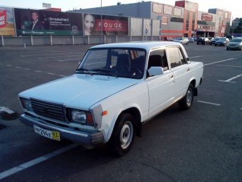

Моя прелесть
Характеристики
Модель: ВАЗ 2107
Год выпуска: 1996
Состояние: на ходу
Пробег: от 52000 до 252000 км
Макс. скорость: 130 км/ч
Оснащение
Кондиционер: отсутствует
Печка: адское горнило
Внутренняя отделка: линолеум
Водительское кресло: с "массажем"
Сигнализация: есть
Потолок: серый
Диски: плохие
Состояние
- Состояние спорное
- В ДТП не участвовала
- Оба передних крыла помяты
- Некрашенный участок серого цвета у левого крыла
- Кузов целиком менян в 2000 году
- Пасажирская дверь заедает
- Салон прокурен
Кому это нужно
- Для начинающих водителей
- Для грубой работы на износ
- Дя энтузиастов
- Для творческих натур
История тачки
Продаю свою "семерку"! Покупка, прямо скажем, сомнительная, но зато и цена - чисто символическая. 40 тысяч рублей и корвет ваш! Год выпуска 1996, состояние спорное.Пробег обозначен на табло как 52000, но под этим стоит понимать 152000. А если совсем честно, то 252000.
Самое главное, аппарат на ходу! По городу никаких проблем (кроме того, что без кондиционера летом в ней жарко как в аду). Рвёт со светофора многие иномарки (особенно те, которые не подозревают, что участвуют в состязании). По трассе тоже нормуль. Какую скорость вам удастся на ней развить, зависит только от вашего инстинкта самосохранения. Лично я в те редкие разы, когда разгонял ее до 130, ловил себя на том, что не моргаю, не шевелюсь и практически не дышу.
Машина в ДТП не участвововала. Но передние крылья немного помяты оба. Наверное били до меня. Хотя я тоже раз стукнул, если честно, но очень медленно. У левого крыла есть некрашеный участок серого цвета. Очень помогает обнаруживать автомобиль на больших парковках и придает зверюге неповторимую индивидуальность. По кузову - есть некоторые участки, которые можно считать нормальными. Кузов целиком менян в 2000 году, но по нему не скажешь.
Внутренняя отделка салона выполнена по чьей-то непостижимой прихоти с использованием линолеума. С этим придется жить. Глубоко в водительском кресле (у которого что-то лопнуло внутри, отчего оно стало ниже, чем должно быть) есть какая-то очень острая деталь, которая иногда больно впивается в поясницу. Я так и не разобрался, что это за деталь, почему она там и как такое вообще может быть.
Пассажирская дверь периодически заедает. Брелок сигнализации в ахтунге, давно выпала пластмасса над главной кнопкой, поэтому туда приходится тыкать ключом. Но это не сложно, потому что ключ всегда отдельно от брелка, потому что пластмассовое ушко тоже давно разломалось. В сервисе на вопрос о замене брелка неуважительно смеются.
В машине последние полтора года не курил. А до этого курил, очень много. Но не больше, чем предыдущий хозяин и его многочисленные друзья - одновременно, все вместе, зимой, с плотно закрытыми стеклами. Потолок нехарактерно серого цвета не позволит этого скрыть.
Диски плохие.
Печка - адское горнило - работает зимой так что мама не горюй. Но к сожалению, горячий воздух подтравливает снизу и летом, когда печка выключена, и если жать больше 110 по трассе в сандалях, то по-мелочи припекает пальцы на правой ноге.
Из монтажного блока имеются странные разводки, которые не с первого раза понимает даже мой электрик. Я не смогу объяснить зачем некоторые из них сделаны, но точно помню, что без них что-то не крутится. Сам монтажный блок, кстати, лучше поменять, некоторые контакты подоткнуты спичками и прутиками, это не совсем правильно и не очень безопасно.
Я рад бы сказать, что зато в эту машину вложена вся моя любовь и забота, но это не так. В нее вложены только ненависть и презрение. Не шаря в устройстве автомобиля, капот я открывал либо чтобы долить какую-нибудь жидкость, исчезнувшую накануне без следа и видимых причин, либо чтобы в недоумении смотреть на двигатель, когда машина вдруг встаёт.
Кому это нужно. Отличный тренажер для начинающих, после которого вождение любого автомобиля, чей год выпуска позже 1982 года, покажется благодатным облегчением. Для грубой работы на износ. Груженая под крышу стройматериалами и с потным мужиком-работягой за рулем эта машина будет выглядеть правильнее, чем с девочкой-студенткой, чей телефон стоит примерно столько же. Для энтузиастов, с удовольствием проживающих бОльшую часть суток в гараже. Простор для творчества в этой машине безграничен, чинить и менять можно практически всё.
Крутой пимп-мобиль для настоящего сутенёра! Закаленная в боях пиратская шхуна с суровым нравом! Самурай, преданный своему хозяину до последнего вздоха. Как сказал Хатори Ханзо, передавая свой лучший меч Чёрной Мамбе, "Даже если сам Будда окажется у тебя на пути, он будет повержен!"